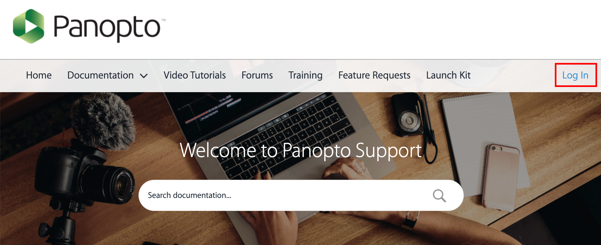

Introduction to Panopto Video
Panopto can be used as a video capturing, editing, hosting & streaming platform. Due to privacy constraints, SFU Canvas integration with Panopto is restricted to access to Panopto tools through the left side navigation in your Canvas course.

After recording/uploading a video in Panopto, students can view the videos directly in Panopto Video in your Canvas course. Panopto also allows students to create & submit videos as an assignment.
How to Record, Edit, and manage videos in Panopto
A tutorial on how to capture and edit videos in panopto organized for SFU Beedie
Staff & Faculty is available here: 2021.02.01 training recording.
How to insert another video in your video lecture, or update a single slide:
How to Use Add a Clip to Splice Multiple Sessions Together
Another way of combining multiple videos into one is to add multiple primary
streams. More info on: How to Edit and Add Streams in the Editor
[Combining multiple sessions: How to Merge Videos *not tested]
Panopto Support by Panopto Team
Tutorials and Guides
For general Panopto documentation, please refer to support.panopto.com. We have a Panopto Enterprise license.
Panopto Webinars
In order to access additional support materials (such as webinars and office hours), please create a support profile.
Webinars organized by Panopto support team are available twice a month. Register for a session here.

Panopto Office Hours
In addition, office hours with Panopto support team are available 10-11am PST every Friday here.

Panopto in SFU Canvas Support
For SFU Beedie Panopto specific questions, please contact your Panopto Admin team
(diliara_nasirova@sfu.ca for ExecED & undergrad instructors / crstech@sfu.ca for
Grad Program instructors).
The following document includes step by step instructions
on working with Panopto Videos in SFU Canvas.
1. How to list Panopto Video in SFU Canvas Modules
You can list Panopto Video in Canvas Modules in two steps:
1.1 Copy Panopto Video link
1.2 Paste the link in the Modules
1.1 Copy Panopto Video link
1.1.1 Go to your class Canvas site and then click on Panopto Video in the course menu.
1.1.2 Choose an existing video recording; click on Share

1.1.3 A pop-up window will appear; Click on the Copy Link button. Close the pop-up window.

1.2 Paste the link in the Modules
1.2.1 Navigate to the Modules and click on the plus icon.